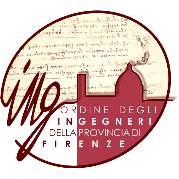
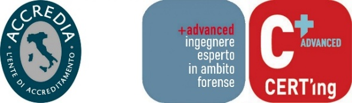

STUDIO DI INGEGNERIA FORENSE CERTING
DOTT.ING. MASSIMO MASSA
INFORTUNISTICA STRADALE E DEI TRASPORTI
Ordine degli Ingegneri della Provincia di Firenze Sez. A
n. 6856 settore industriale ingegneria meccanica
Albo dei Consulenti Tecnici n.14 e Periti n. 28 del Tribunale di Firenze presso l’Elenco del Ministero della Giustizia
Ingegnere Esperto in Ambito Forense specializzato in Infortunistica Stradale e dei Trasporti dall’Agenzia CERT’ing accreditato ACCREDIA UNI CEI EN ISO/IEC 17024 (certificato FIB-1326-IT19) organismo del Consiglio Nazionale degli Ingegneri
STUDIO PIAZZA M.D’AZEGLIO, 18
50121 FIRENZE
tel 055 242878
mob +39 3397566973
pec massimomanfredi.massa@ingpec.eu

